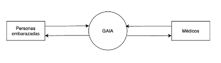

Diagrama de contexto
El siguiente diagrama de contexto muestra las entidades externas y los flujos de datos que entran y salen del sistema.

El diagrama de contexto se amplia con el siguiente Diagrama de Flujo de Datos de Nivel 0, mostrando los procesos generales y almacenes de datos del sistema.
El siguiente Diagrama de Flujo de Datos detalla el proceso de creación de una cita para un médico.